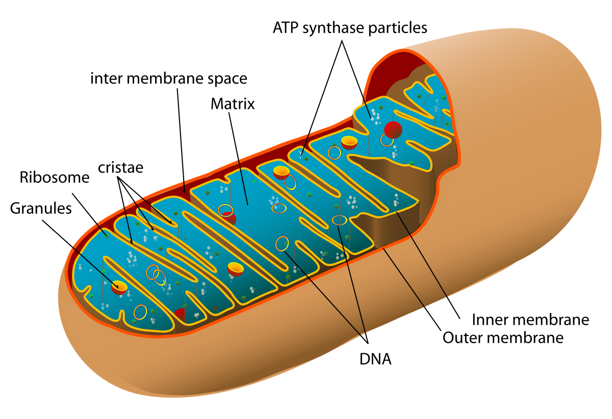
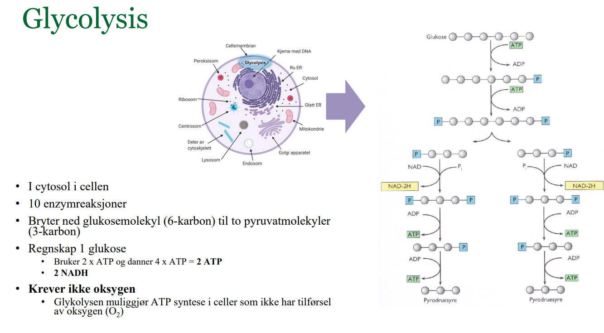
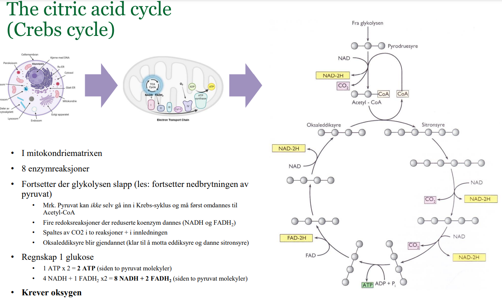
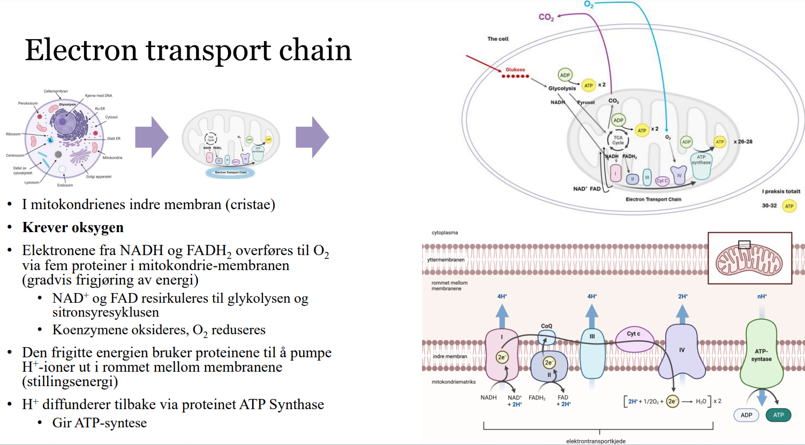
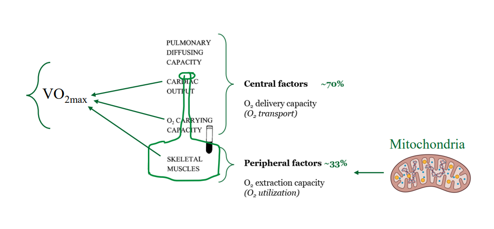
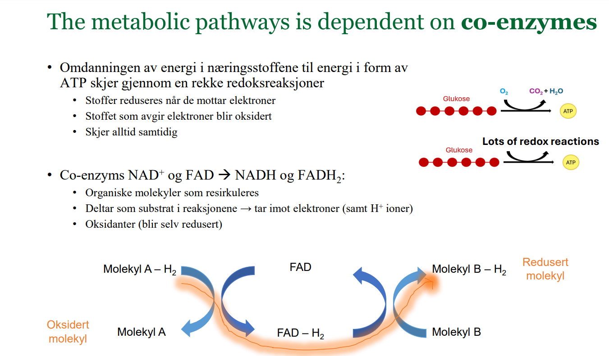

4 Mitokondrier

4.1 Hvorfor trenger vi mitokondrier?
Det er de organellene som produserer ATP, altså den energiformen omtrent alle cellene i kroppen er avhengige av for å opprettholde sin funksjon. Maten vi spiser lagres som glukose i blodbanen. Cellene bryter ned gukosemolekyler i cytosol, før produktene av denne rx vandrer inn i mitokondrien og gjennomgår sitronsyresyklus dersom O2 er tilstede. Siste del av celleåndingen er elektrontransportkjeden der mesteparten av ATP-molekylene dannes. Energiomsetningen (celleåndingen) beskrives ytterligere i avsnittet under.
4.2 Energiomsetning
Glykolysen
- Dette er den første fasen av nedbrytningen av glukose, og den skjer i cytosol, utenfor mitokondriene. I glykolysen brytes ett molekyl glukose (6 karbonatomer) ned til to molekyler pyruvat (3 karbonatomer hver). Denne prosessen gir et nettoutbytte på 2 ATP-molekyler og 2 NADH-molekyler, som senere kan brukes til ATP-produksjon i mitokondriene.

Sitronsyresyklus
- Etter glykolysen blir pyruvat transportert inn i mitokondriene, hvor det omdannes til acetyl-CoA før det går inn i sitronsyresyklusen. Denne syklusen skjer i mitokondriens matrix, og her blir acetyl-CoA fullstendig oksidert. Under syklusen produseres 3 NADH, 1 FADH2, og 1 ATP (eller GTP) per syklus, samt CO2 som et biprodukt.

Elektrontransportkjeden
- De elektroner som er samlet opp i NADH og FADH2, blir deretter transportert gjennom elektrontransportkjeden, som skjer i den indre membranen i mitokondriene. Elektronene passerer gjennom en serie av proteinkomplekser, og denne prosessen skaper en proton (H+) gradient over den indre mitokondriemembranen. Denne gradienten driver ATP-syntase til å produsere ATP. Oksygen fungerer som den endelige elektronakseptoren i kjeden, og sammen med protonene danner det vann (H2O).

4.3 Oksygenopptak
\(\dot{V}O_{2max}\) er det maksimale mengden O2 kroppen evner å ta opp og utnytte ved maksimalt anstrengende arbeid. Det er et slags mål på hvor godt kroppen evner å frakte O2 ut til arbeidende muskulatur og hvor godt mitokondriene evner å nyttiggjøre seg av oksygenet. En \(\dot{V}O_{2max}\) test er altså et mål på hvor kroppens evne til å bruke O2 og produsere ATP.
4.4 Rolle i O2 tranporten og utilisering

4.5 Co-enzymer

4.6 Tilpasninger til trening
Etter utholdenhetstrening øker antallet mitokondrier i muskelcellene, ettersom cellene tilpasser seg høyere energibehov. Flere mitokondrier betyr at kroppen kan produsere mer energi, spesielt i aktiviteter som krever langvarig innsats. Mitokondriene vokser i tykkelse som en tidlig tilpasning til trening. Dette innebærer at hver mitokondrie får større kapasitet til å produsere ATP. Senere kan mitokondriene også vokse i lengde, noe som kan øke overflaten for de reaksjonene som skjer i mitokondriene, spesielt i den indre membranen, der elektrontransportkjeden finner sted.
4.7 Treningsvolum vs Treningsintensitet
Begge er viktig for å utvikle mitokondriene1.